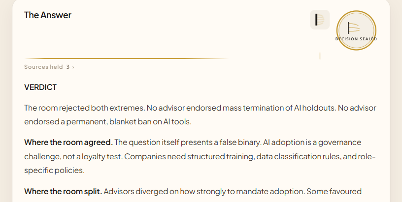
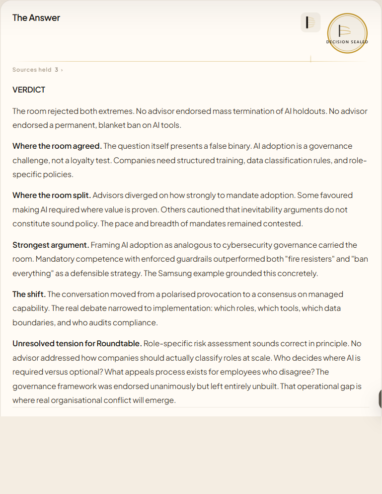

DECYD Round 111 — open both images before scoring

12b-gold-thread-mid-transition.png — mid-draw gold LINE / hairline across seal/thread band

16-history-markdown-clean.png — clean History answer after Markdown rich-text fix